À propos du sujet
Ce projet est une série de 11 photographies intitulée Jour de Mer réalisée en juillet 2021 durant un voyage en
Italie dans la commune pieve ligure à proximité de la ville de Gênes. Le contexte de création est assez simple,
je voulais durant une journée entière retranscrire de manière documentaire et narrative la vie et l’atmosphère
d’une crique discrète connue et fréquentée majoritairement par des locaux qui viennent y vivre la dolce vita.
Je me suis autorisée après coup d’associer à certaines images un format cinématographique (16:9) pour amplifier
le côté narratif et témoigner de la vie qui se déroule dans le lieu.
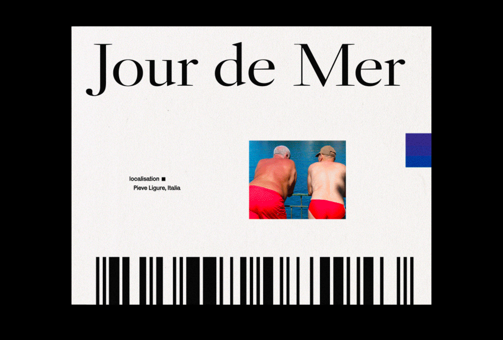
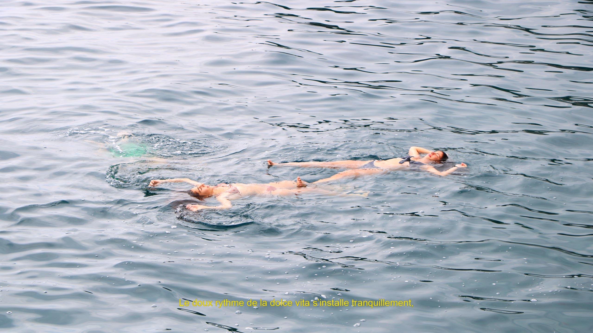
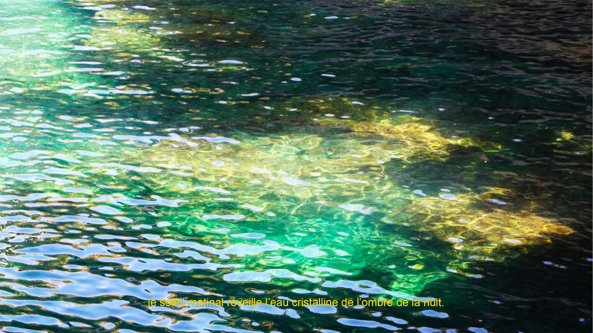
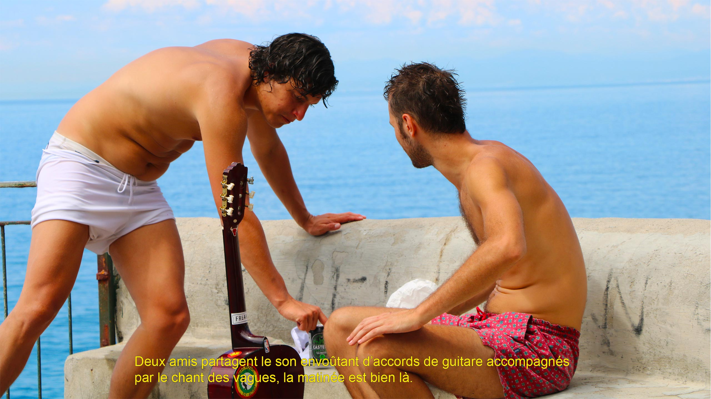
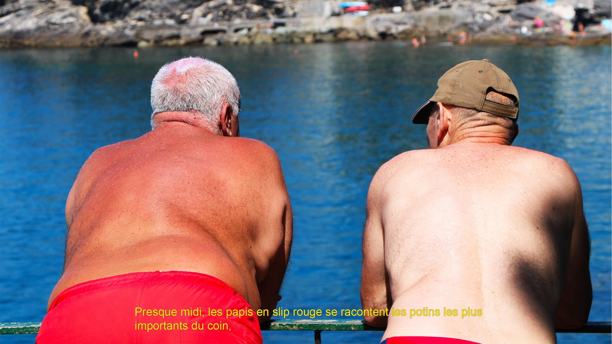
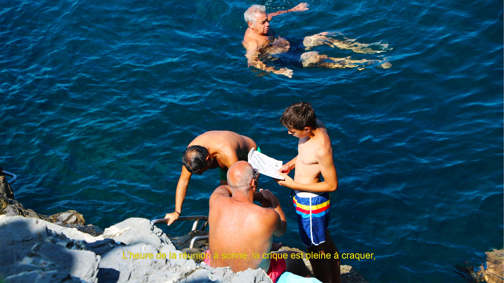
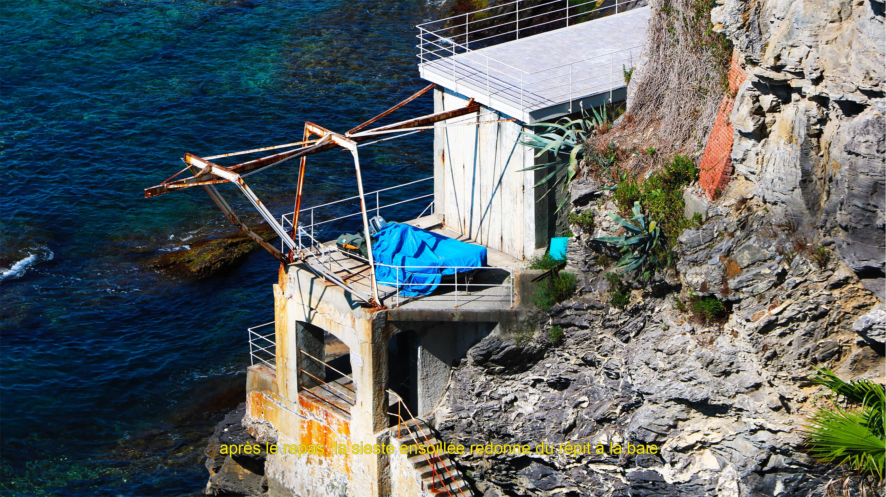
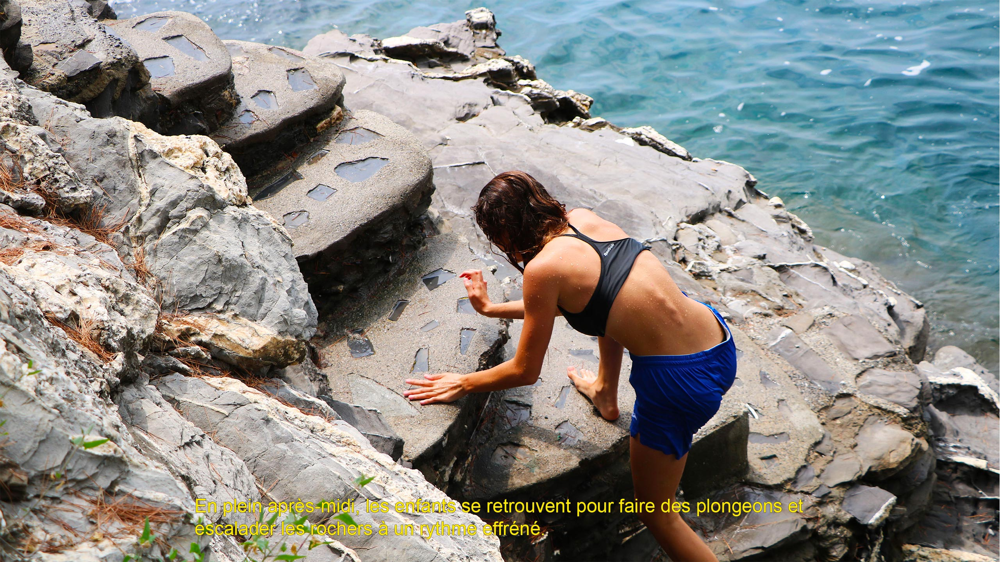
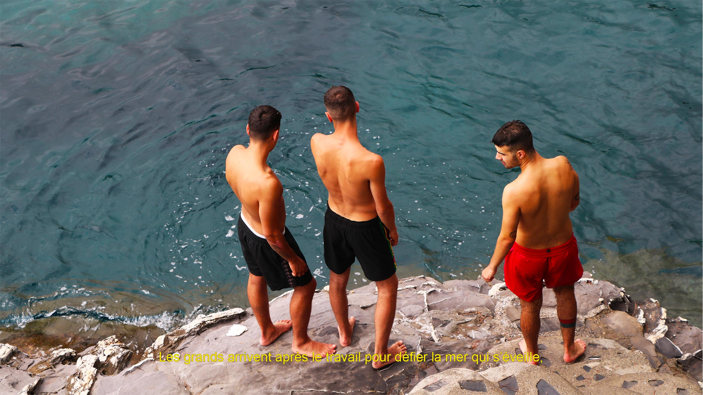
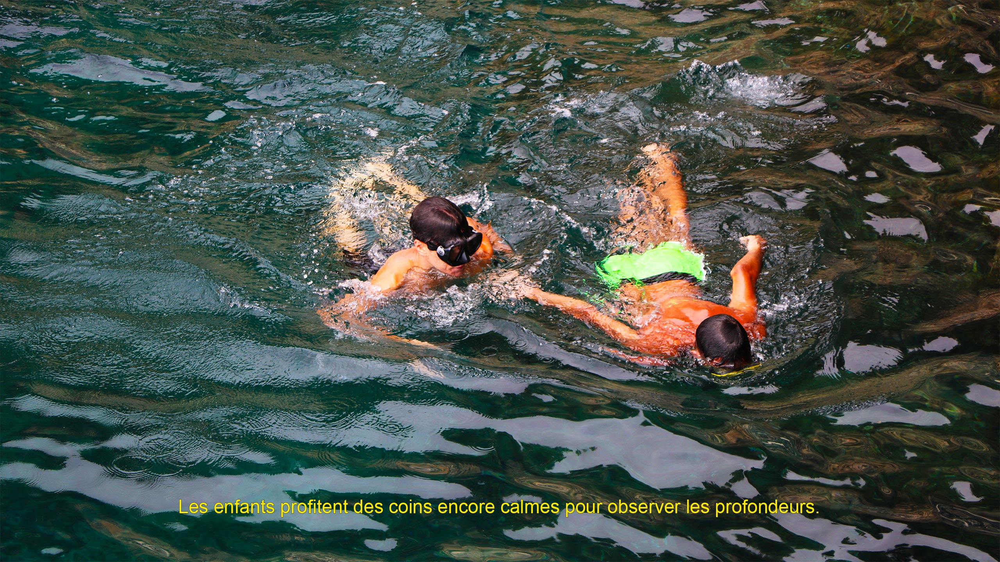
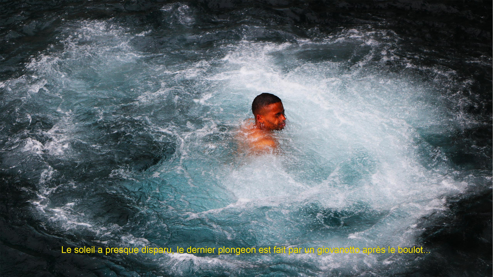
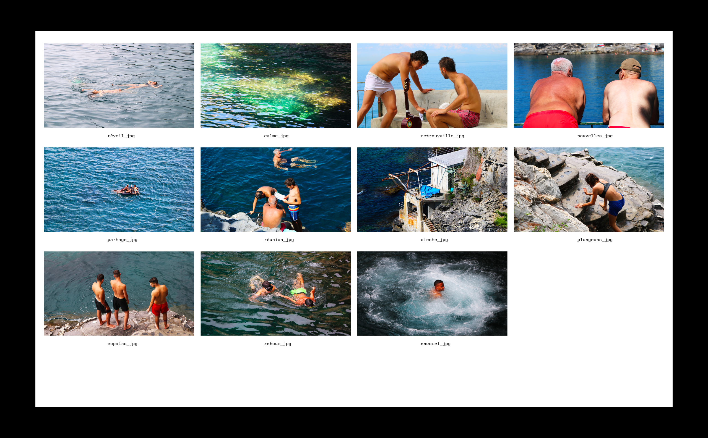